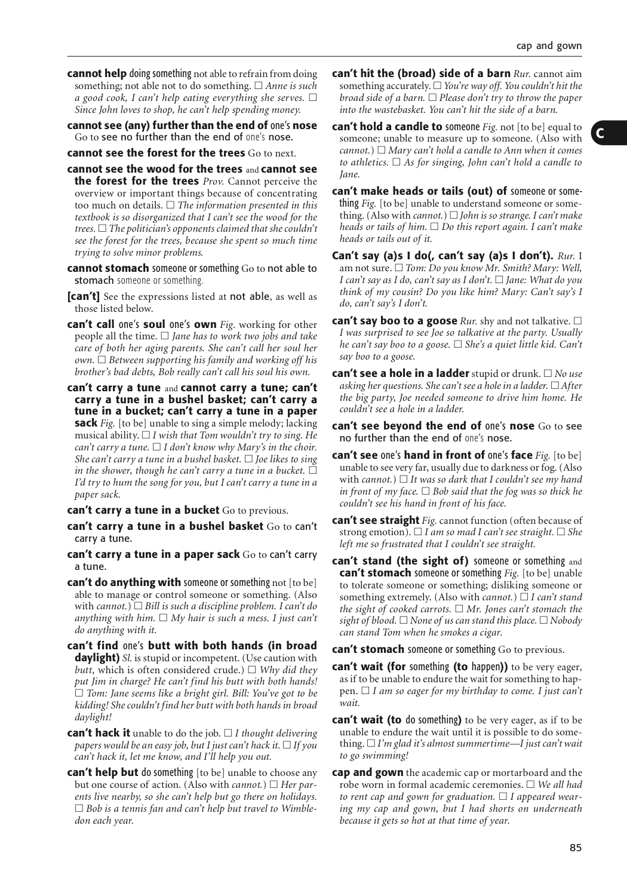
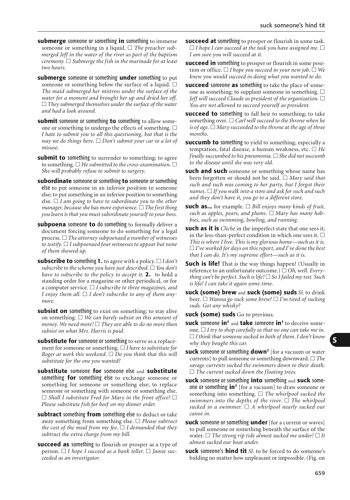
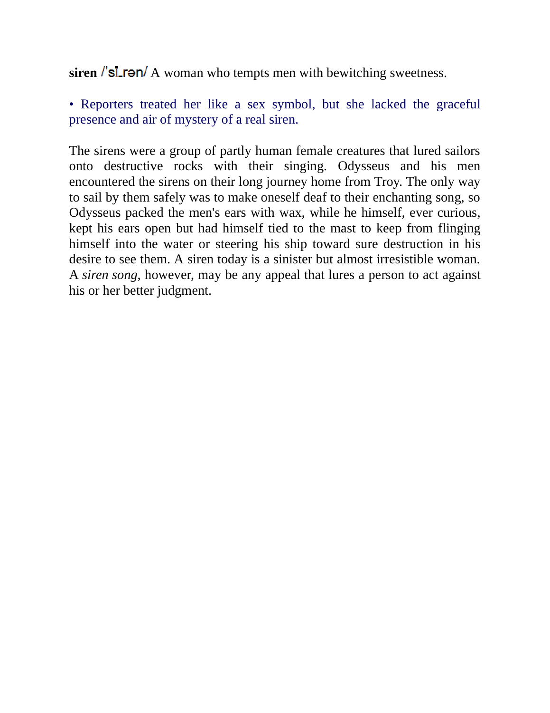
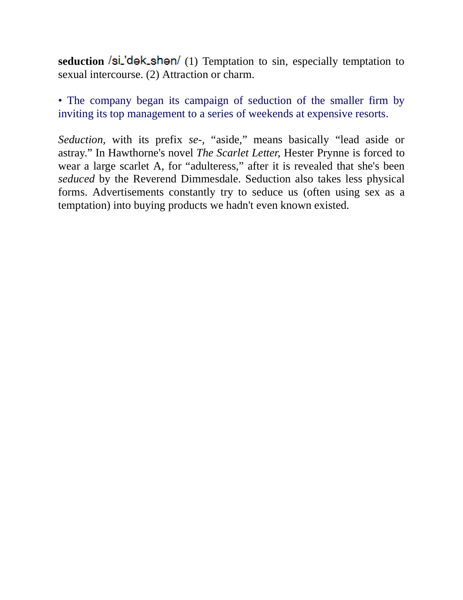
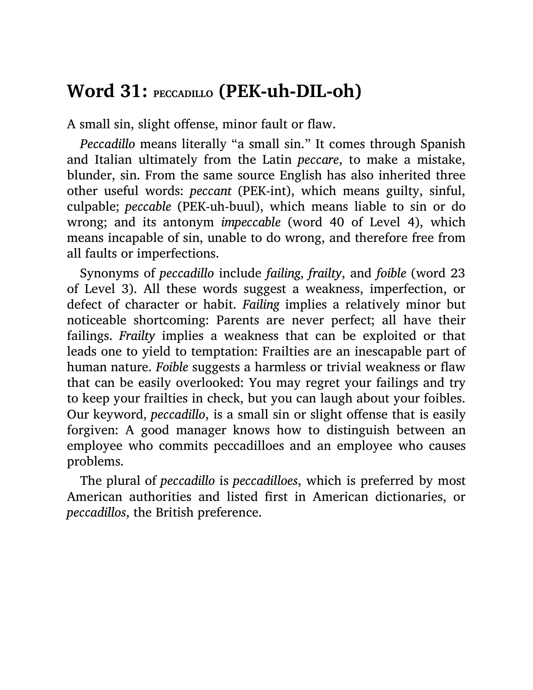

Dictionary of American Idioms · PDF p.103

最自然口語：忍不住、沒辦法不做
language-idiom-unknown-publisher-unknown-date-dictionary-of-american-idioms-c0095 · PDF p.103 · cue: cannot help doing something / not able to refrain

正式書面：敗給誘惑、屈服於弱點
language-idiom-unknown-publisher-unknown-date-dictionary-of-american-idioms-c0664 · PDF p.677 · cue: succumb to something / yield to temptation

文學典故：明知不該仍被誘惑牽走
language-vocabulary-merriam-webster-unknown-date-merriam-websters-vocabulary-builder-pdf--builder-c0032 · PDF p.248 · cue: lures someone against better judgment

誘惑場：normal restraints 被解除，慾望接管
language-vocabulary-merriam-webster-unknown-date-merriam-websters-vocabulary-builder-pdf--builder-c0015 · PDF p.112 · cue: temptation / seduction / normal restraints

字彙層：人性弱點讓人向誘惑讓步
校正：詞條 cue 在切頁包 p.511；p.509 是 chunk/slice 起點。
language-vocabulary-unknown-publisher-unknown-date-verbal-advantage-ten-easy-steps-to-a-powerful-vocabulary-pdf-cabulary-c0114 · PDF p.511 · cue: frailty / weakness / yield to temptation
